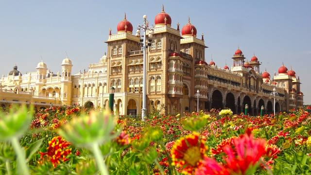
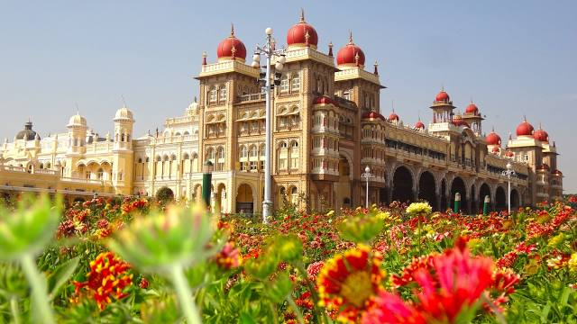

Places to visit
Mysuru Palace
The Mysore Palace is a historical palace and the royal residence at Mysore in the Indian State of Karnataka. It is the official residence of the Wadiyar dynasty and the seat of the Kingdom of Mysore. The palace is in the centre of Mysore, and faces the Chamundi Hills eastward.
Shri Chamundeshwari Temple
The Chamundeshwari Temple is a Hindu temple located on the top of Chamundi Hills about 13 km from the palace city of Mysore in the state of Karnataka in India. The temple was named after Chamundeshwari or Durga, the fierce form of Shakti, a tutelary deity held in reverence for centuries by Mysore Maharajas.
Brindavan Gardens
The Brindavan Gardens is a garden located in the Mandya District of the Indian State of Karnataka. It lies adjoining the Krishnarajasagara Dam which is built across the river Kaveri. The work on laying out this garden was started in the year 1927 and completed in 1932.

 

Mysore Welcomes you
Transport
By Plane: Mysore Airport (MYQ IATA) (located 10 km south of the city centre). Mysore has its
own airport.
By Train: Mysore Junction is the city's main station, and there are daily trains plying the
route to Bangalore.
By Bus: The KSRTC (Karnataka State Road Transport Corporation) buses are very comfortable,
especially the Volvo (Luxury) buses.
By Car: Mysore is approximately 140 km from Bangalore, with a 4-lane highway (2 lanes in
each direction) connecting the 2 cities.

Culture of Mysore
Mysore City is known as the cultural capital of Karnataka. Mysore was the capital of the Wodeyar kings who ruled over the Mysore Kingdom for many centuries. Wodeyars were great patrons of art and music and have contributed significantly to make Mysore a cultural centre.
Culture of Mysore is a fine combination of the historic heritage and the
contemporary
achievements of the city. The
continuous patronage and support of the Kings in every field led to the evolution of a
distinct style known as the
"Mysore Style" in the all the fields like painting, etc.

Yoga
The peak ‘Yoga season" in Mysore runs from December to February, with some students arriving already in October and staying until March. It can be difficult to find accommodation during the peak time, so it’s best to plan early.
Some schools can offer advice on accommodation and often have lists of places
to stay. Other Yoga students are also a
good resource and usually know what’s available. There are also local agents catering to
Yoga students who can assist
with the search for a place to stay for a fee.Some schools can offer advice on accommodation
and often have lists of places to stay.

How To travel
By hitch-hiking: Taking a lift, most of the locals (mainly 2 wheelers) are very helpful and
generally stop to give a lift.
By Bus: City buses originate from a separate City Bus Station 2 km from the Railway Station.
By Car: Tourist cabs are your best option if you plan to tour the city all day or go to
neighbouring towns like Srirangapatna.
By horse-drawn carriage: Horse-drawn carriages (known as a tanga) are a common sight and way
of getting around the tourist hotspots in Mysore.
Our Most Popular Tour Packages
Winter Season
- Brindavan Gardens
- Mysore Zoo
- Sleep in Provided Tents
- St. Philomena Church
Wintertime
Lowest Temp 7.7°C
Summer Season
- Mysore Palace
- GRS Fantasy Park
- Karanji Lake
- Mysore Zoo
Hot Days
Highest Temp 39.4°C
Rainy Season
- Chamundeshwari Temple
- Talakadu
- Chamundi Hills
- KRS Dam
Rainy Days
Average annual rainfall 798.6 mm

Testimonial

Wonderful Visit
One Most beautiful place i visited ever. Yes , it is a crowded place. The architecture is wonderful and maintained well.The historical places with great views and beautiful garden outside and tiger statue. one government Store is also their, do buy whatever you want.

Wonderful Visit
Most beautiful place. Too much crowded, go with family & friends.The architecture is wonderful.This is one of the historical places with great views and beautiful garden outside and inside washroom facilities available for all. Most attraction place in Mysore.
Wonderful Visit
Mysuru Palace is one of the Indias most visited palace. It is a beautiful place to visit. The best time to visit the palace is during Dussehra festival. The Palace sparkles in the darkness with a thousands of bulbs which makes it more beautiful.
Wonderful Visit
The palace is epitome of beauty. Heritage well maintained. It gave feel of time travel. Entry fee is 70 rupees for Indian nationlity. There is arrangement for keeping shoes at minimal cost. At 7 PM entire palace was illuminated. You should not miss this.